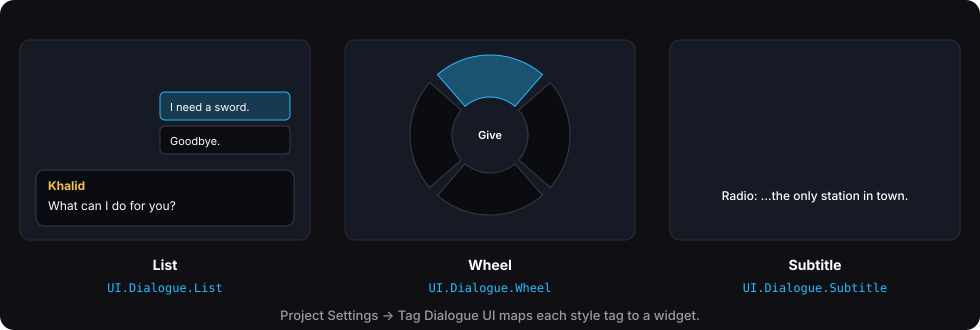

UI
How a conversation finds its widget
NPC's UI Style Override → dialogue asset's UI Style → Default Widget
Project Settings → Plugins → Tag Dialogue UI maps style tags to widgets:
- Default Widget: used when a style has no widget of its own.
- Style Widgets: style tag → widget.
- Add your own styles under
UI.Dialoguein Gameplay Tags. - A missing style falls back to its parent:
UI.Dialogue.Wheel.Small→UI.Dialogue.Wheel→ Default. - Auto Show: creates and shows the widget when the player starts talking. Turn it off to show widgets yourself (Common UI stack, your own HUD).
Built-in styles: UI.Dialogue.List, UI.Dialogue.Wheel and UI.Dialogue.Subtitle.

Templates
Create Templates makes five widgets and sets them as defaults:
| Widget | Use |
|---|---|
| WBP_TDS_Cinematic | Default: speaker, line, option list. |
| WBP_TDS_CinematicWheel | Options on a wheel. |
| WBP_TDS_CinematicSubtitle | Subtitles only (radio, narrator). |
| WBP_TDS_CinematicOption | The option button used by the list. |
| WBP_TDS_CinematicBark | Bark subtitles. |
Open them and restyle freely. They're normal Widget Blueprints.
Building your own widget with blocks
Drop these into any Widget Blueprint. They find the conversation by themselves, with no Blueprint wiring needed.
| Block | What it shows |
|---|---|
| TDS Text | Set Source to one of: Speaker, Line, Hovered Option, Hovered Option Subtitle or Player Name. Line mode has a typewriter, typing sounds, a speaker prefix, speaker colors and auto-advance. |
| TDS Option List | One entry per option. Entry Box Type picks the layout: Vertical, Horizontal, Wrap or Radial. Entry Class = your own button. |
| TDS Option Wheel | Options as a ring, with mouse and stick pointing. |
| TDS Option Button | The built-in entry. Make a child Blueprint and name widgets Button, Label, NumberText and SubtitleText; they're filled for you. |
| TDS Portrait | The speaker's portrait. |
| TDS Continue Prompt | Visible only when the player can continue. Put your own icon or text inside; click to continue. |
| TDS Bark Subtitle / TDS Bark Text | Barks (see above). |
Fully custom UI
You can skip the blocks entirely:
- Interface: implement TDS Dialogue View on any object and register it with Get Dialogue Hub → Register View. You get On Dialogue Opened, On Line Shown, On Options Shown, On Option Hovered, On Typing Changed, On Waiting For Tag, On Dialogue Closed and On Point Direction.
- Events: bind the Dialogue Hub's events from any Blueprint (On Conversation Started, On Line Shown, and so on).
- Talking back: use the Session: Advance, Choose (or Choose Next Frame from button clicks), Hover, Hover Step, Choose Hovered, Choose By Number and End.
Common UI
If your project uses Common UI:
- TDS Dialogue Layer: drop it into your root layout and turn Auto Show off.
- TDS Common Dialogue Widget: a base class for the dialogue widget (Back ends the talk, and gamepad focus goes to the first option).
- TDS Common Option Button: an option entry with Common UI navigation.
- TDS Common Key Hint: "[A] Continue" hints with the right icon per device.